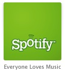
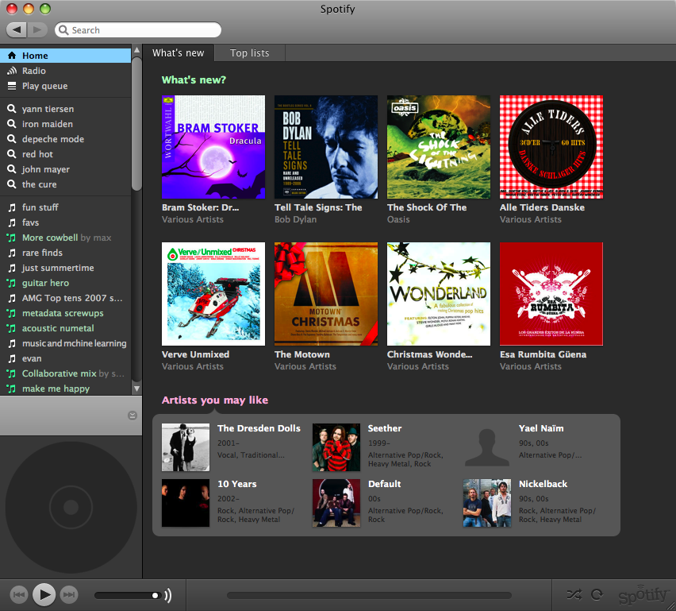

First, the good news: the best online streaming music app - bar none - is launching today.
Spotify has just announced
music licensing deals with Universal, Sony, BMG, EMI Music, Warner
Music, Merlin, The Orchard and Bonnier Amigo. With those deals in
place, Spotify has gone live. Premium access
(advertising-free, paid subscription) is available now (October 7),
while free, ad-supported access will be gradually made available over
the next few months.
Now the bad news: Unfortunately, for those of us in the states,
Spotify is only launching in the UK, Germany, France, Italy, Spain,
Finland, Norway and Sweden. No word yet on when they will be launching
here.

Spotify is a streaming internet music application that offers
on-demand access to a seemingly unlimited amount of music. In some
ways, it is like iTunes - you can search and browse for music, create
playlists, and play music by any artist with just a click of the mouse.
But Spotify is so much better than iTunes since it gives you access to
millions of tracks (all perfectly legal). With Spotify you can share
playlists with other Spotify users (and they can actually listen to
them), you can even create collaborative playlists where multiple users
can add tracks to the list. Spotify also offers a Pandora-like radio
mode that will give you an infinite playlist of music by similar artists
(using AllMusic's artist similarity). You might expect that since
Spotify is streaming music over the wire, that it would be slow and
cumbersome - but to me, it seems to be as fast or faster than iTunes.
When I click on a song, it starts playing immediately - with no stutters
or drop outs (well except for that time when my wireless router was
dying).
In addition to the excellent music client, there's a lot of cool stuff going on in the Spotify back room as well.  Every item (artists, tracks, albums and playlists) in Spotify has a URL
associated with it. This makes it easy not only to share music but for
third parties to build applications that use Spotify as the music
engine. (We've done that here in the Labs with our Music Explaura
- when you click on the little green play button you are playing music
in Spotify). Spotify also provides web services to allow 3rd parties the
ability to search the Spotify catalog for artists and tracks and
resolve them to Spotify URLs.
Every item (artists, tracks, albums and playlists) in Spotify has a URL
associated with it. This makes it easy not only to share music but for
third parties to build applications that use Spotify as the music
engine. (We've done that here in the Labs with our Music Explaura
- when you click on the little green play button you are playing music
in Spotify). Spotify also provides web services to allow 3rd parties the
ability to search the Spotify catalog for artists and tracks and
resolve them to Spotify URLs.
The premium subscription costs £10 per month or £100 per year in the UK. It comes with these attributes:

(Note that the premium subscription comes with two beta invites,
so if you live in the USA, it is time to make a European friend).
Spotify is also offering a day pass - (£1 per day) for when you are planning that romantic dinner and you don't have enough Barry White to get you through the night.
I've written about Spotify a few times already.
Since then, the Spotify team has added lots of new features. For
instance, there's now a 'What's New' tab that highlights music that has
been recently added to the catalog, along with some artist
recommendations:

They've also added a zeitgeist page that shows you what is popular on Spotify (or just what's been popular for you).
Spotify is the closest thing there is to the celestial jukebox - with
(nearly) all music available on demand. I'm really excited to see where
the Spotify team takes this. Congrats to the Spotify team for releasing
such a great music app - (but don't spend too much time resting on your
laurels - get back to work on those pesky music deals so that Spotify
can be released in the U.S.!)


 I was looking through the list of proposed panels for the next
I was looking through the list of proposed panels for the next 
 I've really just scratched the surface - there is lots to do at
thesixtyone - you can spend time looking for undiscovered gems, you can
listen to the music that is been bumped the most, you can explore the
'favorites' of other users, you can build playlists, you can
I've really just scratched the surface - there is lots to do at
thesixtyone - you can spend time looking for undiscovered gems, you can
listen to the music that is been bumped the most, you can explore the
'favorites' of other users, you can build playlists, you can
 create your radio station, you can comment on tracks (the comments get
turned into little popups that sometimes appear when people listen to
the song) - it really does feel a bit like a D&D game - it is fun to
notified via a little popup that you've just received some points or
achieved some goal. And while you are doing this, you are listening to
music, of all sorts of genres. The music is mostly good to excellent
(with some clunkers too). And there are some big name artists - I've
listened to NiN, Bjork, Jonathan Coulton and Daft Punk on thesixtyone.
create your radio station, you can comment on tracks (the comments get
turned into little popups that sometimes appear when people listen to
the song) - it really does feel a bit like a D&D game - it is fun to
notified via a little popup that you've just received some points or
achieved some goal. And while you are doing this, you are listening to
music, of all sorts of genres. The music is mostly good to excellent
(with some clunkers too). And there are some big name artists - I've
listened to NiN, Bjork, Jonathan Coulton and Daft Punk on thesixtyone.

{kind=link}
{kind=link}